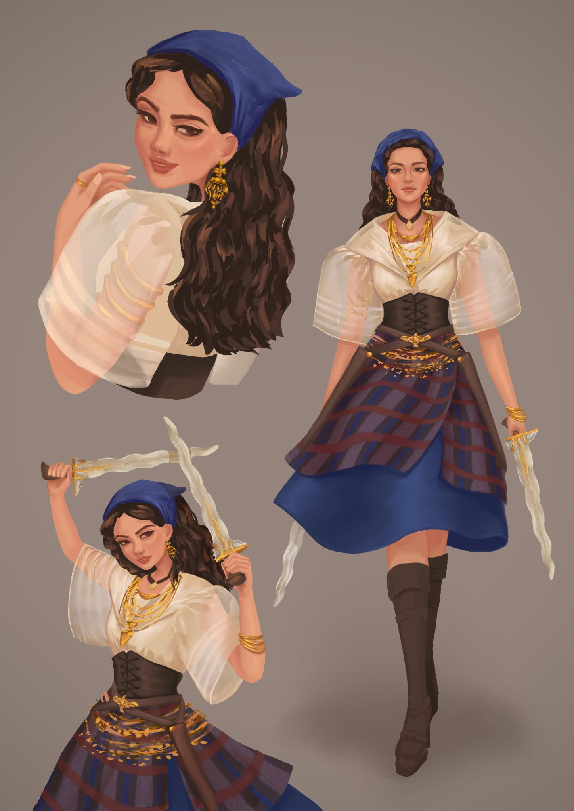

Hobbies
Drawing, painting, listening to music, browsing the internet, playing the piano, making accessories, cafe hopping, watching movies, and more.

ABOUT ME
I am known by many names — Elaicy, Acy, Lychee, and more — but my full name is Elaicy A. España.
I am a 21-year-old creative since birth — creating art on paper and digital screen, playing keyboard and producing music, with a passion for all forms of art, and a curiosity for digital technology. I like to use various creative programs such as Procreate, Clip Studio Paint, Adobe Photoshop, Canva, and more.
Currently, I am a student based in Quezon City, taking Bachelor of Arts in Multimedia Studies (BAMS) at the University of the Philippines Open University.
BONUS: I have three cats! Their names are Mochi, Mucho, and Oreo :)
A few things that inspire me and make me happy.
Drawing, painting, listening to music, browsing the internet, playing the piano, making accessories, cafe hopping, watching movies, and more.
Laufey, The Marías, Beabadoobee, Matt Maltese, Malcolm Todd, IV of Spades, Ben&Ben, Megumi Acorda, Chestnut Bakery, and more.
Cats, the sky, matcha, earrings, colors blue and yellow, savory food, coffee, and more.
A collection of my creative works and multimedia projects.

This is my most recent work as a digital art illustrator of six years! I have been working on various digital art projects, and I believe this piece truly showcased my growth in skills and creativity. This is just one of three artworks that are in the same series of artworks I made inspired by the anime Love Through a Prism. All in all, the entire series of artworks took over 40 hours to complete. Thanks to the anime's inspiring story about art and the artist experience, it fueled me to create the most elaborate piece I've ever made so far. It is truly a perfect example of how passionate I am about art.

Character design and artwork for my original character, Mayari, a Filipina pirate that likes wearing experimental Filipiniana fashion and specializes in wielding a kalis sword. I mainly focus on illustrating human figures and portraits.

An audio drama that tackles the theme of generational trauma, featuring scenes depicting child abuse, with a story spanning through four generations. I was the director, lead scriptwriter, and lead audio engineer.